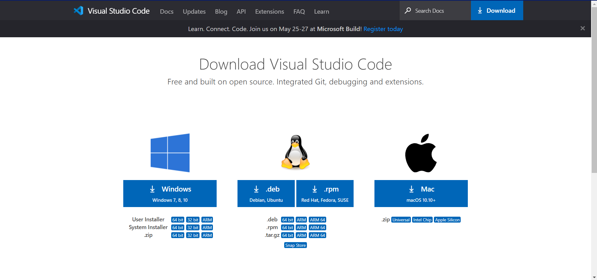

STEP 1
JavaScript
We need to download Visual studio code
We need to download first Visual studio code here’s a link https://code.visualstudio.com/download. Click on the link and download on respective OS. Click on the below IMAGE to go to the website dierectly

STEP 2
Opening file exploreer and and creating a file named JS
tutorial
Desktop or anywhere else but remeber where you kept the file
After downloading Visual Studio code(vdsc) go to file explorer and create a folder name = e.g., JS tutorial. After creating open the file where you kept. You can keep the folder anywhere you want just remeber wher it is.
STEP 3
Opening the folder via Visual Studio code
Open Vdsc and create a file name index.html
when you open vdsc it will be like this.[see the below IMAGE]. So if you can see there will be a open folder written click on it and it will open your file explorer so when it is opned locate you file where it is located